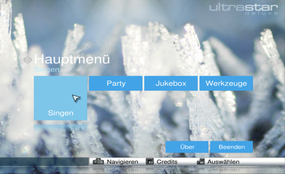
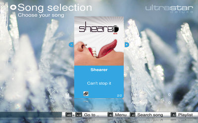
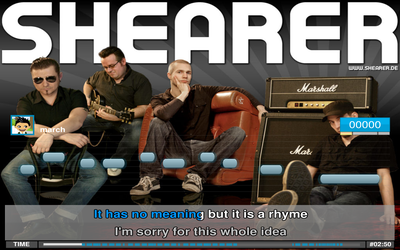
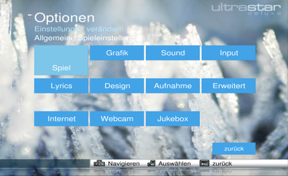
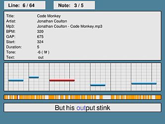

UltraStar Deluxe
Dieser Artikel wurde für die folgenden Ubuntu-Versionen getestet:
Ubuntu 17.10 Artful Aardvark
Ubuntu 16.04 Xenial Xerus
Ubuntu 14.04 Trusty Tahr
Zum Verständnis dieses Artikels sind folgende Seiten hilfreich:
UltraStar Deluxe  ist ein Clone des bekannten Karaoke-Spiels SingStar von der PlayStation. Für das Spiel stehen auf der Projektseite einige freie Lieder zum Download bereit. Um weitere Stücke mit dem Programm zu singen, benötigt man eine Musikdatei, welche in den Formaten ogg, mp3, o.ä. vorliegen sollte, passend dazu eine Textdatei, in der sich der Text sowie die Tonhöhe befinden. Optional können Cover, Hintergrundbilder und Videos (flv, divx, mpg und avi) genutzt werden, die dann zum Lied eingeblendet werden. Das Programm kann durch Designs im Aussehen verändert und durch Erweiterungen im Funktionsumfang ergänzt werden.
ist ein Clone des bekannten Karaoke-Spiels SingStar von der PlayStation. Für das Spiel stehen auf der Projektseite einige freie Lieder zum Download bereit. Um weitere Stücke mit dem Programm zu singen, benötigt man eine Musikdatei, welche in den Formaten ogg, mp3, o.ä. vorliegen sollte, passend dazu eine Textdatei, in der sich der Text sowie die Tonhöhe befinden. Optional können Cover, Hintergrundbilder und Videos (flv, divx, mpg und avi) genutzt werden, die dann zum Lied eingeblendet werden. Das Programm kann durch Designs im Aussehen verändert und durch Erweiterungen im Funktionsumfang ergänzt werden.
|  |
| Hauptmenü |
|  |
| Songauswahl |
Installation¶
Ultrastar Deluxe ist nicht mehr in den offiziellen Paketquellen enthalten. Als Alternative zum PPA (s. u.) kann man auf Performous ausweichen, zu dem auch offizielle Pakete vorhanden sind. Das PPA ist jedoch nur bis 15.10 verfügbar und man muss das Programm für neuere Versionen kompilieren.
PPA¶
Die Version 1.1.0 von Ultrastar Deluxe kann über fertige Pakete installiert werden (siehe auch Ultrastar-Wiki ).
Adresszeile zum Hinzufügen des PPAs:
ppa:tobydox/ultrastardx
Hinweis!
Zusätzliche Fremdquellen können das System gefährden.
Ein PPA unterstützt nicht zwangsläufig alle Ubuntu-Versionen. Weitere Informationen sind der  PPA-Beschreibung des Eigentümers/Teams tobydox zu entnehmen.
PPA-Beschreibung des Eigentümers/Teams tobydox zu entnehmen.
Damit Pakete aus dem PPA genutzt werden können, müssen die Paketquellen neu eingelesen werden.
Nach dem Aktualisieren der Paketquellen können die folgenden Pakete installiert [3] werden:
ultrastar-deluxe (ppa)
ultrastar-deluxe-songs (ppa, optional)
 mit apturl
mit apturl
Paketliste zum Kopieren:
sudo apt-get install ultrastar-deluxe ultrastar-deluxe-songs
sudo aptitude install ultrastar-deluxe ultrastar-deluxe-songs
Nach erfolgreicher Installation ist das Programm unter "Anwendungen -> Spiele -> UltraStar Deluxe" zu finden.
Hinweis:
Das ppa beinhaltet lediglich eine ältere Version für Trusty Tahr. Es wird empfohlen das Programm zu kompilieren.
|  |
| Singen |
Quellcode¶
Vorbereitung¶
Um das Programm kompilieren zu können müssen im Vorfeld die folgenden Pakete installiert [3] werden:
autoconf
autogen
checkinstall
git
fpc
liblua5.3-dev
libsdl2-dev
libsdl2-image-dev
libsdl2-image-2.0-0
libsdl2-2.0-0
ffmpeg
libavdevice-dev
libsqlite3-0
libsqlite3-dev
libpcre3
libpcre3-dev
ttf-dejavu
ttf-freefont
portaudio19-dev
lua5.1-dev
libopencv-highgui-dev
libportmidi-dev
libprojectm-dev
mit apturl
Paketliste zum Kopieren:
sudo apt-get install autoconf autogen checkinstall git fpc liblua5.3-dev libsdl2-dev libsdl2-image-dev libsdl2-image-2.0-0 libsdl2-2.0-0 ffmpeg libavdevice-dev libsqlite3-0 libsqlite3-dev libpcre3 libpcre3-dev ttf-dejavu ttf-freefont portaudio19-dev lua5.1-dev libopencv-highgui-dev libportmidi-dev libprojectm-dev
sudo aptitude install autoconf autogen checkinstall git fpc liblua5.3-dev libsdl2-dev libsdl2-image-dev libsdl2-image-2.0-0 libsdl2-2.0-0 ffmpeg libavdevice-dev libsqlite3-0 libsqlite3-dev libpcre3 libpcre3-dev ttf-dejavu ttf-freefont portaudio19-dev lua5.1-dev libopencv-highgui-dev libportmidi-dev libprojectm-dev
Durchführung¶
Im nächsten Schritt wird der Quellcode von der Projektseite heruntergeladen und kompiliert [4]:
git clone https://github.com/UltraStar-Deluxe/USDX cd USDX ./autogen.sh ./configure make sudo checkinstall
Über ultrastardx kann das Programm gestartet [5] werden. Alternativ den Menüeintrag wählen.
Lieder¶
Pakete¶
Auf der Projektseite  oder auf Performous gibt es ein paar freie Songs, welche verwendet werden können. Diese werden nach dem entpacken [6] in das passende Verzeichnis verschoben. Um UltraStar Deluxe mit neuen Songs zu erweitern, muss man die passende .txt-Datei erstellen oder aus dem Internet herunterladen. Hier eine Suchmaschinen verwenden. Die zugehörige Audiodatei entweder im Online-Store kaufen oder von der eigenen CD einlesen. Cover und Hintergrundbilder ebenfalls im Internet suchen. Alternativ können Musikvideos in den Formaten MPEG, flv oder avi eingebunden werden.
oder auf Performous gibt es ein paar freie Songs, welche verwendet werden können. Diese werden nach dem entpacken [6] in das passende Verzeichnis verschoben. Um UltraStar Deluxe mit neuen Songs zu erweitern, muss man die passende .txt-Datei erstellen oder aus dem Internet herunterladen. Hier eine Suchmaschinen verwenden. Die zugehörige Audiodatei entweder im Online-Store kaufen oder von der eigenen CD einlesen. Cover und Hintergrundbilder ebenfalls im Internet suchen. Alternativ können Musikvideos in den Formaten MPEG, flv oder avi eingebunden werden.
My Little Karaoke¶
my Little Karaoke setzt auf die Engine von UltraStar Deluxe. Das Installationsskript funktioniert nicht richtig. Jedoch gibt es einen Umweg über den man an die Lieder, welche in verschiedensten Sprachen vorliegen, von My Little Pony gelangen kann. Im Skript wird auf die Datei linux.webinst verwiesen. Öffnet man den Link so findet man eine Vielzahl von Dateien mit den Endungen .mlk (Karaoke) und .mlt (Theme). Hier die gewünschte(n) Dateie(n) herunterladen (z.B. https://www.mylittlekaraoke.com/store/webinst/AC3-base1.tar.mlk) und umbenennen. Bei allen Dateien handelt es sich um .tar-Archive.
AC3-base1.tar.mlk muss in AC3-base1.tar, die Datei SIM4-base25.tar.mlk in SIM4-base25.tar umbenannt werden und so weiter. Anschließend werden diese entpackt [6]. Es werden die Ordner Official und Community angelegt. Diese Ordner müssen in das Songverzeichnis verschoben werden, damit die Lieder verwendet werden können. Zusätzliche Lieder findet man auf der Projektseite .
Hinweis:
Das Copyright des jeweiligen Landes ist bei der Verwendung von Songs aus dem Internet zu beachten.
Sammlung¶
Um eigene Lieder in das Programm zu importieren, muss man den Text und die passende Audiodatei nach ~/.ultrastardx/songs/Interpret-Titel kopieren. Falls der Ordner nicht existiert, diesen manuell erstellen. In den Ordner Interpret - Titel können das Cover, ein Hintergrundbild oder ein Video hinzugefügt werden.
Hinweis:
Der Aufbau der Ordner und Dateien ist im Artikel zu Performous detailliert beschrieben.
|  |
| Einstellungen |
Konfiguration¶
Mikrofon¶
Unter "Tools -> Options -> Record" mit
→ die Soundkarte wählen - z.B. USBMIC Serial# xxxxxxxx. Bei der Verwendung von "SingStar Mikrofonen" Kanal 1 auf 1 und Kanal 2 auf 2 setzen. Ansonsten off wählen. Die gewählten Werte entsprechen der Spielernummer.
Hinweis:
Vorher muss der Lautstärkeregler geöffnet, die entsprechende Soundkarte (z.B. USBMIC Serial# xxxxxxxx) ausgewählt und der Regler auf 100 % gesetzt werden.
Sprache¶
Um die Oberfläche auf deutsch zu erhalten "Tools -> Options -> Game -> Language" anwählen und mit
← +
→ German auswählen. Nach einem Neustart steht die neue Sprache zur Verfügung.
Bedienung¶
Das Programm ist intuitiv zu bedienen. Mit den Pfeiltasten ← + ↑ + ↓ + → die gewünschten Menüpunkte ansteuern und mit ⏎ anwählen. Mittels Esc gelangt man auf eine höhere Ebene. Alternativ kann das Spiel auch mit der Maus gesteuert werden. In der Songauswahl kann mit Hilfe des Scrollrads durch die Lieder geblättert werden.
| UltraStar Deluxe | |
| Menüpunkt | Beschreibung |
| "Singen" | Das eigentlice Spiel starten. Hier stehen verschiedene Modi zur Verfügung. |
| "Party" | Ein rundenbasiertes Teamspiel. |
| "Jukebox" | Musikautomat. |
| "Werkzeuge" | Statistiken ersehen, Songeditor (unter Linux deaktiviert) öffnen und Spielkonfiguration. |
| "Beenden" | Spiel beenden. |
Menü¶
In der Songauswahl M anwählen um den Editor zu öffnen, die Wiedergabeliste zu bearbeiten oder den Spieler zu wechseln.
Suche¶
Um einen Titel in der Musiksammlung zu suchen kann man der Songauswahl J anwählen und den gewünschten Titel suchen.
Spieler¶
Die Anzahl der Spieler wird unter "Optionen -> Spiel -> Spieler" eingestellt. Nachdem dies geschehen ist stehen diese im Spiel zur Verfügung.
Themes¶
Die auf der Projektseite verfügbaren Themes können von der Version 1.1 nicht verwendet werden, da sie für Vorgängerversionen erstellt wurden. Allerdings kann man über den Blog auf der Projektseite auch Themes für die aktuelle Version gefunden werden, die dann nach ~/.ultrastardx/themes entpackt werden können [3].
|  |
| Editor |
Editor¶
Im internen Editor von UltraStar Deluxe können Songs bearbeitet werden. Der Editor lässt sich über die Taste
M in der Songauswahl öffnen. Eine ausführliche Anleitung über die Möglichkeiten ist im ehemaligen UltraStar Deluxe Wiki zu finden. Alternativ kann Github weiterführende Informationen liefern. Der Midi-to-Text-Editor (aufrufbar über das Hauptmenü) ist in der Linux-Version deaktiviert. Im allgemeinen wird dieser Editor heute auch nicht mehr zur Song-Erstellung verwendet, da die vorhandenen MIDIs zu ungenau sind.
Teamspiel¶
Im so genannten "Party-Modus" können bis zu 4 Spieler in 3 Teams gegeneinander antreten. In jeder Runde wird ein Sänger jedes Teams per Zufall bestimmt. Diese müssen dann nach der Auswahl eines zufälligen Songs verschiedene "Spiele" spielen. Von Haus aus bietet UltraStar Deluxe folgende Plugins: Bis 5000, Teamsingen, Duell, Blind Mode und Balken halten. Diese Plugins sind erweiterbar.
Tipps¶
Tastenkürzel¶
| UltraStar Deluxe | |
| Taste(n) | Funktion |
| Esc | Eine Ebene höher wechseln. |
| Alt + ⏎ | Vollbild / Fenstermodus |
| ⏎ | Auswahl. |
 | Navigation. |
| J | Titelsuche |
| S | Intro überspringen. |
| V | Video (de)aktivieren. |
Weitere Kürzel sind auf Github zu ersehen.
Links¶
ultra-star.de
 - FAQ - Probleme beim Song-Erstellen
- FAQ - Probleme beim Song-Erstellen
Performous - Composer - Songeditor
Yass - Songeditor
- Erstellt mit Inyoka
-
 2004 – 2017 ubuntuusers.de • Einige Rechte vorbehalten
2004 – 2017 ubuntuusers.de • Einige Rechte vorbehalten
Lizenz • Kontakt • Datenschutz • Impressum • Serverstatus -
Serverhousing gespendet von